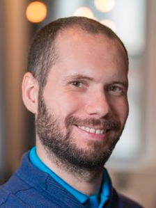

ANDREA ALÙ
Professor at the Graduate Center, CUNY
Director of Photonics Initiative at ASRC, CUNY
Website:
https://asrc.gc.cuny.edu/people/andrea-alu/
Areas of Expertise/Research:
- Electromagnetics
- Metamaterials
- Plasmonics
- Nano-optics
- Acoustics
MARIA TAMARGO
Professor at the City College of New York
Physical Chemistry/Inorganic Chemistry
Website:
https://www.ccny.cuny.edu/profiles/maria-tamargo
Areas of Expertise/Research:
- Topological Insulators
- Crystal Growth
- Epitaxy
- Semiconductor Materials
- Molecular Beam Epitaxy
VINOD MENON
Professor at the City College of New York
Photonics
Website:
http://www.lanmp.org
Areas of Expertise/Research:
- Nano and Micro Photonics
- Photonics
- Quantum Technologies

CARLOS MERILES
Professor at the City College of New York
Quantum Physics
Website:
https://cmeriles.ccny.cuny.edu
Areas of Expertise/Research:
- Novel magnetic resonance
- Optical NMR
LIA KRUSIN
Professor at the City College of New York
Solid State Physics
Website:
http://krusinlab.ccny.cuny.edu/
Areas of Expertise/Research:
- Complex nanostructured materials
- Strong electron correlations
- Quantum phase transitions
- Superconductivity

ANDREW REINMANN
Professor at the Graduate Center (CCNY)
Earth and Environmental Sciences and Biology
Website:
https://asrc.gc.cuny.edu/people/andrew-reinmann/
Areas of Expertise/Research:
- Forest Ecology
- Plant Ecology
- Urban Ecology
- Terrestrial Biogeochemistry
RONALD KODER
Professor at the City College of New York
Physics, Chemistry, Biochemistry and Chemical Engineering
Website:
https://KoderLab.org
Areas of Expertise/Research:
- Synthetic Biology
- Biodesign
- Experimental Biological Physics
- Biosensors
- Nuclear Magnetic Resonance
- Biohybrid Metamaterials

MATTHEW SFEIR
Professor at the Graduate Center (CCNY)
Chemistry, Physics, and Photonics
Website:
https://sfeirlab.ws.gc.cuny.edu
Areas of Expertise/Research:
- Charge and Spin Correlations in Organic Materials
- Nanostructured Energy Conversion Devices
- Next Generation Ultrafast Spectroscopy Methods
XI CHEN
Professor at the New York University
Technology, Operations and Statistics
Website:
http://www.xchenlab.com
Areas of Expertise/Research:
- Evaporation-powered locomotion
- Green chemistry
- Electricity generation

ORIE SHAFER
Professor at the Graduate Center
Neuroscience and Chronobiology
Website:
https://www.shaferlab.org
Areas of Expertise/Research:
- Neurobiological basis of circadian timekeeping
- Entrainment
REIN ULIJN
Professor at the Graduate Center
Nanoscience, Biochemistry and Chemistry
Website:
http://www.ulijnlab.com
Areas of Expertise/Research:
- Bionanotechnology
- Peptide Nanotechnology
- Biocatalysis

NIEL SHELL
Professor at the City College of New York
Mathematics
Areas of Expertise/Research:
FRANCISCSO VILLAESCUSA-NAVARRO
Research scientist at the Flatiron Institute, Simons Foundation
Astrophysics
Website:
https://franciscovillaescusa.github.io
Areas of Expertise/Research:
- Theoretical cosmology
- Machine Learning
